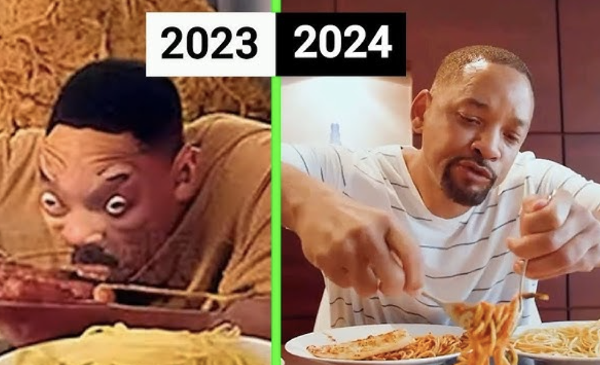
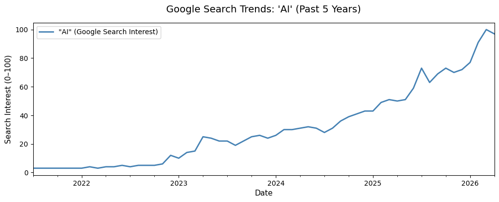
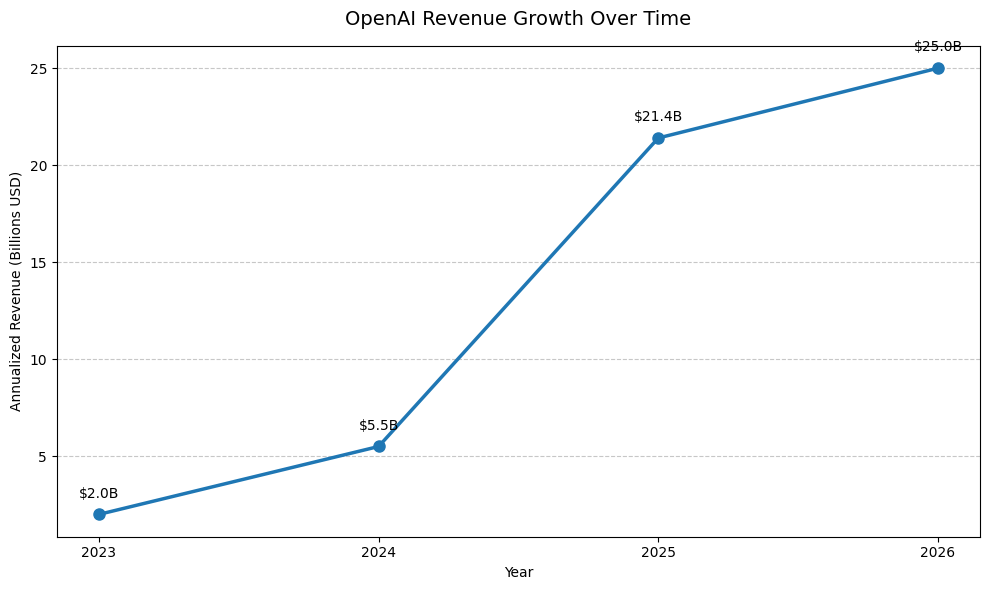
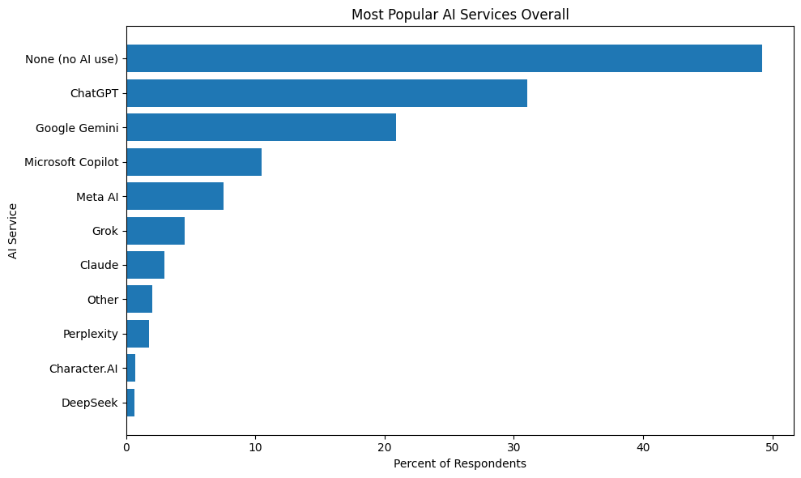
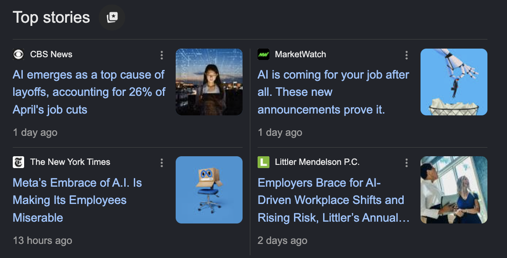
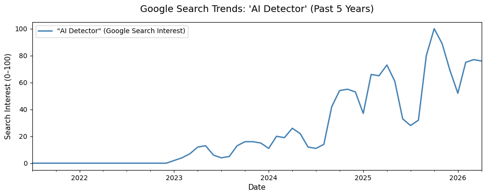
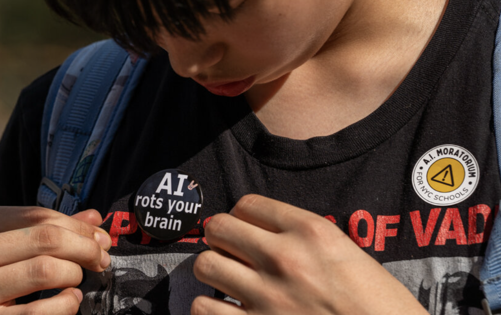
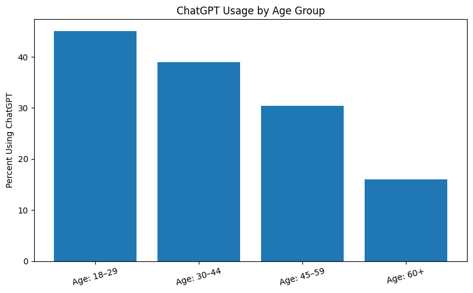

import pandas as pd
import time
import matplotlib.pyplot as plt
import matplotlib.dates as mdates
import warnings
warnings.filterwarnings('ignore')From Internet Curiosity to Global Infrastructure
In the early months of 2023, conversations about a website called ChatGPT quietly spread across the internet. Tech enthusiasts debated its potential on Twitter, students experimented with it to solve homework problems, and curious users tested what “artificial intelligence” could actually do. At the time, AI still felt experimental — something novel, slightly amusing, and often unreliable. Generative AI images were mocked online for distorted faces and surreal outputs like the now-infamous clips of “Will Smith eating spaghetti.” Few people imagined how quickly these tools would evolve or how deeply they would become embedded into daily life.
Just three years later, in 2026, artificial intelligence has transformed from a niche internet phenomenon into one of the defining technologies of modern society. AI now shapes how people work, study, communicate, search for information, create art, and make decisions. Students rely on AI to brainstorm essays, summarize readings, and organize assignments. Individuals use AI to plan vacations, generate recipes, and answer everyday questions. Corporations increasingly integrate AI into customer service systems, software development, data analysis, and workplace automation. At the same time, these technological shifts have raised concerns about layoffs, environmental sustainability, and the future of human labor itself.

“Artificial intelligence will have a more profound impact on humanity than fire, electricity, and the internet.” - Sundar Pichai, CEO of Google
Whether this prediction is entirely true remains uncertain, but AI has undeniably become one of the most influential forces shaping contemporary society. Discussions about AI now dominate conversations surrounding education, medicine, climate change, politics, media, and the future of employment.
This blog post examines the rise of artificial intelligence through quantitative trends in public interest, company growth, education, and environmental impact. By analyzing search data, polling, and revenue growth, I hope to explore how AI moved from a technological curiosity to an infrastructure that increasingly shapes everyday life.
The Explosive Rise of AI
For decades, artificial intelligence existed primarily in science fiction. Popular culture imagined AI as humanoid robots, sentient computers, or futuristic machines disconnected from ordinary life. Before 2022, the average person rarely interacted with AI directly or even thought about it regularly. Search interest in the term “AI” remained relatively low and stable for years.
That changed dramatically with the release and popularization of generative AI tools like ChatGPT– and Google Trends data over the past five years reveals a striking transformation in public awareness.
google_ai = pd.read_csv('googleSearch_ai.csv',
skiprows=2,
index_col=0,
parse_dates=True)
google_ai.columns = ['"AI" (Google Search Interest)']
fig, ax = plt.subplots(figsize=(12, 4))
google_ai.plot(ax=ax, linewidth=2, color="steelblue")
ax.set_title("Google Search Trends: 'AI' (Past 5 Years)", fontsize=14, pad=15)
ax.set_xlabel("Date", fontsize=11)
ax.set_ylabel("Search Interest (0–100)", fontsize=11)
ax.set_axisbelow(True)
plt.show()
Beginning in late 2022 and accelerating throughout 2023, searches for “AI” surged globally, eventually reaching peak popularity in 2026. The graph above demonstrates the rapid normalization of AI within public consciousness. Artificial intelligence transitioned from a specialized technology into a mainstream cultural and economic force almost overnight. This rise in public interest is reflected in workplace adoption as well. According to a Gallup poll, half of employed American adults now report using AI at least occasionally in their jobs, while daily and weekly usage rates continue to rise. AI has become integrated into offices, classrooms, marketing departments, healthcare systems, and customer service operations across industries.
Interestingly, Google search interest for “AI” begins to slightly stabilize in 2026 after years of explosive growth. Rather than indicating declining relevance, this may actually suggest the opposite: AI is no longer viewed as a temporary trend, but rather, normalized. People no longer search “AI” out of novelty because AI tools are increasingly assumed to be part of everyday digital life.
Almost perfectly mirroring this rise in public attention is the extraordinary growth of OpenAI, the company behind ChatGPT. Over just a few years, OpenAI experienced one of the fastest revenue expansions in modern tech history, increasing annualized revenue by tens of billions of dollars. The company’s financial growth closely parallels the rise in Google search interest surrounding AI itself. As public awareness increased, so did investment, adoption, and commercialization.
df = pd.read_csv("ai_companies_revenue_reports.csv")
df["Date"] = pd.to_datetime(df["Date"])
openai_df = df[df["Company"] == "OpenAI"].copy()
openai_df = openai_df.sort_values("Date")
openai_df["Revenue_Billions"] = openai_df["Annualized revenue (USD)"] / 1e9
openai_df = openai_df.dropna(subset=["Date", "Revenue_Billions"])
openai_df["Year"] = openai_df["Date"].dt.year
openai_yearly = openai_df.groupby("Year").last().reset_index()
fig, ax = plt.subplots(figsize=(10, 6))
ax.plot(
openai_yearly["Year"],
openai_yearly["Revenue_Billions"],
marker="o",
linewidth=2.5,
markersize=8,
zorder=3
)
for _, row in openai_yearly.iterrows():
ax.annotate(
f"${row['Revenue_Billions']:.1f}B",
xy=(row["Year"], row["Revenue_Billions"]),
xytext=(0, 12),
textcoords="offset points",
ha="center",
fontsize=10,
)
ax.set_xticks(openai_yearly["Year"])
ax.set_xticklabels(openai_yearly["Year"].astype(int))
ax.yaxis.grid(True, linestyle="--", alpha=0.7)
ax.set_axisbelow(True)
ax.set_title("OpenAI Revenue Growth Over Time", fontsize=14, pad=15)
ax.set_xlabel("Year")
ax.set_ylabel("Annualized Revenue (Billions USD)")
plt.tight_layout()
plt.show()
However, the future trajectory of AI may become more competitive and fragmented. Just as Google search trends have begun to plateau slightly, OpenAI’s dominance may eventually face challenges from rival companies entering the market. The AI industry is rapidly expanding, with companies racing to build alternative models, integrate AI into existing products, and compete for users.
Despite AI’s rapid visibility, adoption is still far from universal. According to polling conducted by the Pew Research Center, roughly half of surveyed respondents reported that they still do not regularly use AI tools. While AI dominates media discussions, many schools, workplaces, and institutions are still in the early stages of integrating AI into their systems. In many ways, society is still only at the beginning of widespread AI adoption.
df = pd.read_csv("polling_on_ai_usage_mar_2026.csv")
percentage_cols = df.columns[2:]
for col in percentage_cols:
df[col] = (
df[col]
.astype(str)
.str.replace('%', '', regex=False)
.replace('nan', None)
.astype(float)
)
services_df = df[df["Question"] == "AI Services Used"]
sorted_df = services_df.sort_values("Overall", ascending=False)
plt.figure(figsize=(10,6))
plt.barh(
sorted_df["Response"],
sorted_df["Overall"]
)
plt.gca().invert_yaxis()
plt.title("Most Popular AI Services Overall")
plt.xlabel("Percent of Respondents")
plt.ylabel("AI Service")
plt.tight_layout()
plt.show()
What is clear, however, is that artificial intelligence has already shifted from an emerging technology into a foundational part of modern digital culture.

AI in Education: Learning Tool or Academic Crisis?
Few places demonstrate the rapid rise of artificial intelligence more clearly than schools and universities.
Among students, AI has quickly become embedded into everyday academic life. College students increasingly use AI tools to brainstorm essay ideas, summarize readings, explain difficult concepts, organize study materials, generate code, and even prepare for exams. For many students, AI functions more like a constant academic assistant available at any moment.
At the same time, schools have struggled to determine where the line exists between assistance and academic dishonesty. As AI usage among students increased, so did institutional anxiety surrounding plagiarism and authenticity. One of the clearest indicators of this tension is the dramatic rise in Google searches for the term “AI Detector.”
google_detectors = pd.read_csv('googleSearch_aiDetector.csv',
skiprows=2,
index_col=0,
parse_dates=True)
google_detectors.columns = ['"AI Detector" (Google Search Interest)']
fig, ax = plt.subplots(figsize=(12, 4))
google_detectors.plot(ax=ax, linewidth=2, color="steelblue")
ax.set_title("Google Search Trends: 'AI Detector' (Past 5 Years)", fontsize=14, pad=15)
ax.set_xlabel("Date", fontsize=11)
ax.set_ylabel("Search Interest (0–100)", fontsize=11)
ax.set_axisbelow(True)
plt.show()
Search trend data shows a sharp increase beginning in 2023, with peaks that closely align with academic semesters, midterms, and final exam periods. During summer and winter breaks, search interest declines noticeably before rising again once classes resume.
The pattern is striking because it directly mirrors the rhythm of the academic calendar, suggesting that concerns surrounding AI-generated writing are now deeply tied to modern education itself. In Fall 2025, searches for “AI Detector” reached their highest levels yet, reflecting growing institutional attempts to monitor or regulate AI-assisted work.
This raises larger questions about how AI may be reshaping the learning process itself. According to reporting by The Guardian, many educators worry that excessive reliance on AI tools may weaken students’ critical thinking, writing, and problem-solving skills. Teachers interviewed in surveys expressed concern that students increasingly depend on technology to complete tasks that previously required independent analysis and creativity.
One teacher summarized this issue bluntly:
“Students are losing core skills — thinking, creativity, writing, even how to have a conversation.”

Polling data also shows that individuals between ages 18–29 are the largest demographic users of ChatGPT. This likely reflects both generational familiarity with technology and the intense academic and professional pressures younger people face. AI offers speed, convenience, and efficiency in environments where students are expected to constantly produce work under tight deadlines.
chatgpt = services_df[services_df["Response"] == "ChatGPT"]
age_cols = ["Age: 18–29", "Age: 30–44", "Age: 45–59", "Age: 60+"]
age_values = chatgpt[age_cols].iloc[0]
plt.figure(figsize=(8,5))
plt.bar(
age_cols,
age_values.values
)
plt.title("ChatGPT Usage by Age Group")
plt.ylabel("Percent Using ChatGPT")
plt.xticks(rotation=15)
plt.tight_layout()
plt.show()
Yet AI in education is not entirely negative. Many students use AI as a supplementary learning tool rather than a replacement for thinking. AI can explain difficult concepts, provide personalized feedback, and make information more accessible. For students with disabilities, language barriers, or limited academic support systems, AI may even reduce educational inequalities.
The central challenge facing schools is that educational institutions must now decide how to adapt to a world in which AI is permanently integrated into learning itself.
Conclusion: A Technology That Already Changed the World
Only a few years ago, artificial intelligence was viewed by many people as an experimental internet trend or a futuristic concept disconnected from everyday life. Today, AI has become deeply integrated into the systems that shape modern society. It influences how students learn, how employees work, how companies operate, how information spreads, and even how global infrastructure consumes energy.
Public interest for AI has exploded, corporate investment has accelerated rapidly, and younger generations in particular are adapting to AI as a normal part of daily life. At the same time, concerns surrounding education, employment, creativity, misinformation, and climate change continue to grow alongside technological advancement.
What makes this moment historically significant is that society is attempting to adapt to it in real time. Schools are rewriting academic policies. Companies are restructuring workplaces. Governments are debating regulation. Entire industries are being transformed simultaneously while the technology itself continues evolving at extraordinary speed.
Artificial intelligence has already shaped the present, so the larger question now is ultimately how we choose to respond to a technology that is becoming increasingly impossible to ignore.